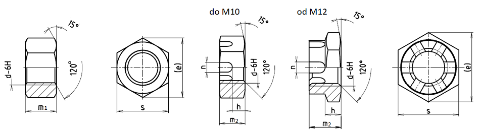

Příklad označení přesné šestihranné matice malé se závitem M10:
ŠESTIHRANNÁ MATICE ČSN 02 1402.21–M10
Příklad označení přesné malé korunové matice se závitem M10:
KORUNOVÁ MATICE ČSN 02 1413.21–M10
| Závit d | M6 | M8 | M10 | M12 | (M14) | M16 | (M18) | M20 |
|---|---|---|---|---|---|---|---|---|
| M8×1 | M10×1,25 | M12×1,25 | (M14×1,5) | M16×1,5 | (M18×1,5) | (M20×1,5) | ||
| s | 9 | 12 | 14 | 17 | 19 | 22 | 24 | 27 |
| e | 10,4 | 13,8 | 16,2 | 19,6 | 21,9 | 25,4 | 27,7 | 31,2 |
| m1 | 4,5 | 6 | 7 | 8,5 | 10 | 11,5 | 13 | 14 |
| Hmotnost šestihr. [g] | 1,5 | 3,6 | 5,3 | 9,8 | 13,5 | 21,2 | 27,9 | 38,1 |
| m2 | 7 | 8,5 | 9,5 | 12 | 14 | 16 | 18 | 20 |
| h | 3 | 4 | 5 | 6 | 8 | 9 | 10 | 12 |
| n | 2 | 2,5 | 2,8 | 3,5 | 3,5 | 4,5 | 4,5 | 4,5 |
| c | 2 | 2 | 2 | 2 | 2 | |||
| Hmotnost korunové [g] | 2,1 | 5,6 | 7,4 | 12,3 | 17,2 | 25,9 | 33,4 | 48,6 |
| Závlačka | 1,6×15 | 2×18 | 2,5×20 | 3×22 | 3×25 | 4×30 | 4×35 | 4×35 |